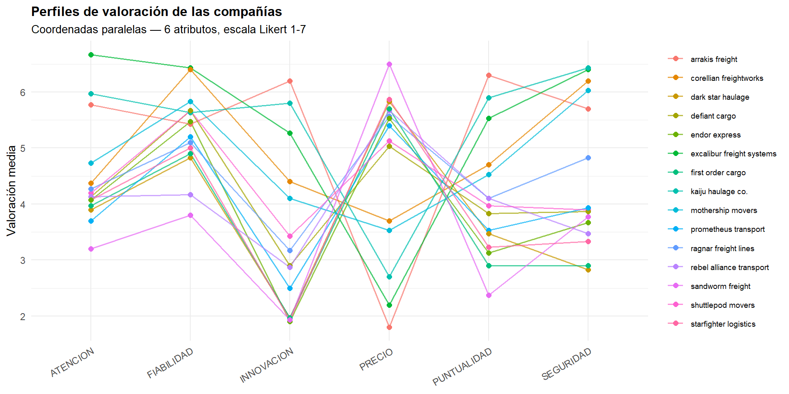
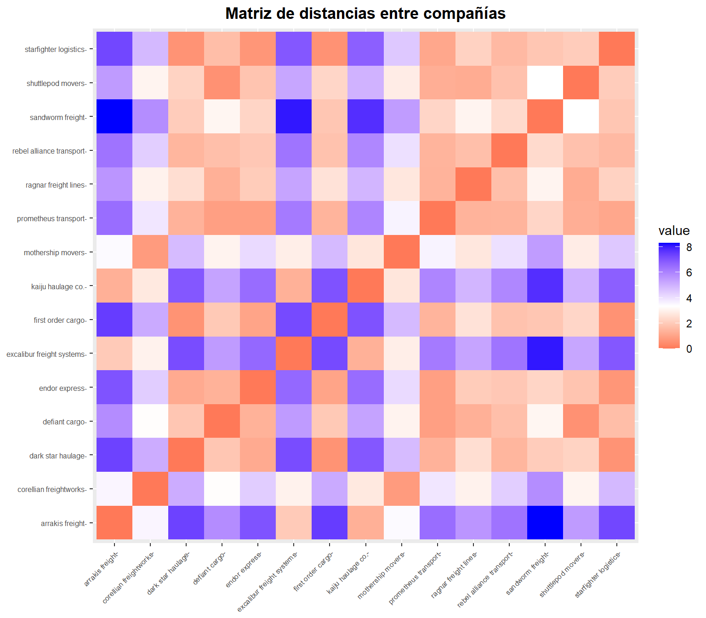
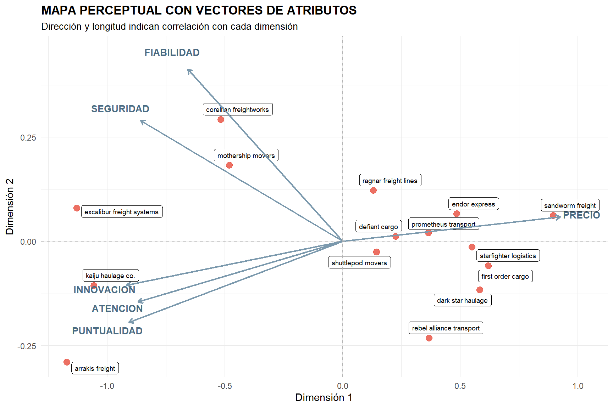
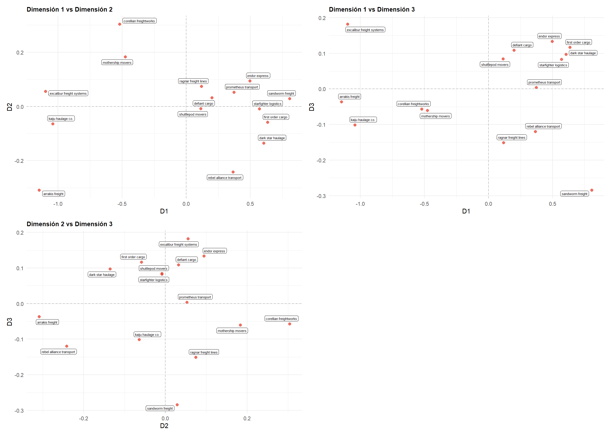

12 Técnicas de Mapeado Perceptual: Escalado Multidimensional.
Figura 12.1. ¿Cómo nos ven? El mapa de las percepciones.
12.1  Introducción: los mapas perceptuales.
Introducción: los mapas perceptuales.
En capítulos anteriores hemos utilizado diversas técnicas para describir, clasificar o explicar el comportamiento de un conjunto de variables. Todas ellas comparten un rasgo: parten de datos objetivos —cifras de ventas, ratios financieros, índices de satisfacción— y aplican procedimientos estadísticos para extraer conclusiones. Sin embargo, en el ámbito de la estrategia empresarial y el marketing, existe una pregunta que los datos objetivos, por sí solos, no responden: ¿cómo perciben los clientes nuestro servicio en relación con los de la competencia?
Esta pregunta es esencialmente subjetiva, y para abordarla necesitamos una herramienta capaz de traducir las percepciones humanas en una representación visual interpretable. Esa herramienta es el mapa perceptual.
Un mapa perceptual es una representación gráfica de las percepciones que tienen los clientes (o cualquier grupo de evaluadores) sobre las relaciones entre un conjunto de casos —productos, servicios, marcas, empresas— en un espacio de pocas dimensiones (habitualmente dos). Su objetivo es revelar las estructuras ocultas que subyacen en los datos de percepción: qué casos se consideran similares, cuáles se perciben como diferentes, y qué ejes o dimensiones latentes organizan esas percepciones en la mente de los encuestados.
Los mapas perceptuales permiten responder a interrogantes fundamentales para la toma de decisiones empresariales:
¿Quiénes son nuestros competidores más directos, desde el punto de vista del cliente?
¿Cuál es nuestra posición en el mercado respecto a la competencia?
¿Cómo podemos reposicionar nuestra marca o servicio?
¿A qué segmento debemos dirigir nuestros esfuerzos?
¿Cuáles son nuestras fortalezas y debilidades percibidas?
¿Existe algún nicho de mercado no cubierto?
Para construir estos mapas a partir de datos de percepción, se han desarrollado diversas técnicas estadísticas, entre las cuales destaca la familia de métodos conocida como Escalado Multidimensional (EMD).
12.2 Escalado Multidimensional: concepto y tipos.
El Escalado Multidimensional (Multidimensional Scaling, MDS) es una técnica que permite descubrir estructuras o patrones dentro de una matriz de proximidades entre casos. Su objetivo es doble:
Determinar la dimensión del modelo (el número de ejes) que proporcione un ajuste satisfactorio.
Obtener las coordenadas de los casos en esas dimensiones, de manera que las distancias entre los puntos en el mapa reflejen fielmente las proximidades percibidas: cuanto más cercanos sean dos puntos, más similares serán las opiniones de los encuestados sobre esos dos casos.
Una ventaja importante del EMD frente a otras técnicas multivariantes (como el análisis factorial o el análisis de correspondencias) es que los resultados no dependen de los juicios del investigador sobre qué variables o características incluir. No es necesario presentar a los encuestados una lista predefinida de atributos: las dimensiones que emergen del análisis proceden directamente de los juicios globales de los encuestados sobre la similitud entre los casos.
Dicho esto, en la práctica aplicada es frecuente que los datos de partida no sean juicios directos de similitud, sino valoraciones de los casos en un conjunto de atributos (por ejemplo, mediante escalas Likert). En estos casos, la matriz de proximidades se deriva de los datos de valoración, como veremos más adelante.
12.2.1 Proximidades y distancias.
El concepto central del EMD es la proximidad entre dos casos: un valor que indica cuán similares o diferentes los perciben los encuestados. Cuando se habla de proximidad en este contexto, nos referimos a una «distancia perceptual» entre los casos.
El procedimiento más directo para obtener datos de proximidad es preguntar a las personas acerca del parecido que perciben entre cada par de casos. Sin embargo, este enfoque resulta costoso cuando el número de casos es elevado (con \(n\) casos hay \(n(n-1)/2\) pares distintos), y en la práctica se recurre con frecuencia a un procedimiento indirecto: pedir a los encuestados que valoren cada caso en una serie de atributos mediante una escala tipo Likert, y calcular después la distancia entre los perfiles de valoración.
Formalmente, la matriz de proximidades \(\Delta\) recoge las distancias entre todos los pares de casos:
\[ \Delta = \begin{pmatrix} \delta_{11} & \cdots & \delta_{1j} & \cdots & \delta_{1n} \\ \vdots & & \vdots & & \vdots \\ \delta_{i1} & \cdots & \delta_{ij} & \cdots & \delta_{in} \\ \vdots & & \vdots & & \vdots \\ \delta_{n1} & \cdots & \delta_{nj} & \cdots & \delta_{nn} \end{pmatrix} \]
donde \(\delta_{ij}\) representa la proximidad (distancia) entre el caso \(i\) y el caso \(j\). Esta matriz es simétrica (\(\delta_{ij} = \delta_{ji}\)) y tiene ceros en la diagonal (\(\delta_{ii} = 0\)).
12.2.2 La matriz de dimensiones.
El objetivo del EMD es encontrar, a partir de \(\Delta\), una matriz de coordenadas \(X\) que represente cada caso como un punto en un espacio de \(p\) dimensiones:
\[ X = \begin{pmatrix} x_{11} & \cdots & x_{1j} & \cdots & x_{1p} \\ \vdots & & \vdots & & \vdots \\ x_{i1} & \cdots & x_{ij} & \cdots & x_{ip} \\ \vdots & & \vdots & & \vdots \\ x_{n1} & \cdots & x_{nj} & \cdots & x_{np} \end{pmatrix} \]
La fila \(i\) recoge las puntuaciones (coordenadas) del caso \(i\) en cada una de las \(p\) dimensiones. Estas coordenadas deben generar distancias entre los puntos que sean lo más coherentes posible con las proximidades originales de la matriz \(\Delta\).
12.2.3 EMD métrico y no métrico.
La diferencia entre ambos tipos radica en el nivel de exigencia con que se pide que las distancias en el mapa reproduzcan las proximidades originales:
EMD métrico (clásico): exige que las distancias en el mapa sean proporcionales a las proximidades originales. Es decir, si la distancia entre A y B es el doble que la distancia entre C y D en los datos, también debe serlo en el mapa. Se utiliza cuando las proximidades están medidas en una escala de razón o intervalo, con significado métrico preciso.
EMD no métrico (ordinal): exige únicamente que las distancias en el mapa preserven el orden de las proximidades originales. Si A y B están más cerca que C y D en los datos, también deben estarlo en el mapa, pero no importa cuánto más cerca. Basta con que se respete la ordenación, no las magnitudes exactas.
El EMD no métrico es el más utilizado en Ciencias Sociales y en investigación de mercados, porque los datos de encuesta (escalas Likert, valoraciones ordinales) no tienen un significado métrico estricto: la diferencia entre un 4 y un 5 en una escala de satisfacción no es necesariamente la misma que la diferencia entre un 6 y un 7. Al trabajar solo con el orden, el EMD no métrico es más robusto frente a esta limitación.
En este capítulo nos centraremos en el EMD no métrico, que es el más adecuado cuando los datos proceden de encuestas con escalas Likert.
12.3 El algoritmo SMACOF y el Stress.
12.3.1 SMACOF.
Para pasar de la matriz de proximidades a la matriz de coordenadas, se han desarrollado diversos algoritmos. Uno de los más utilizados en EMD no métrico es SMACOF (Scaling by Majorizing a Complicated Function), implementado en el paquete {smacof} de R.
SMACOF busca iterativamente las coordenadas de los casos que minimizan una medida de desajuste denominada Stress. El proceso es conceptualmente sencillo: parte de una configuración inicial (habitualmente aleatoria o basada en un análisis de componentes principales) y la va refinando en sucesivas iteraciones hasta que el Stress deja de mejorar apreciablemente.
12.3.2 El Stress como medida de bondad del ajuste.
El Stress cuantifica la discrepancia entre las proximidades originales y las distancias obtenidas en la configuración MDS. Su valor oscila entre 0 (ajuste perfecto: las distancias en el mapa reproducen exactamente el orden de las proximidades) y valores positivos que indican grados crecientes de desajuste.
Kruskal (1964) propuso la siguiente escala orientativa para interpretar el Stress:
| Stress | Calidad de la representación |
|---|---|
| \(> 0{,}20\) | Pobre |
| \(0{,}10 - 0{,}20\) | Razonable |
| \(0{,}05 - 0{,}10\) | Buena |
| \(0{,}025 - 0{,}05\) | Excelente |
| \(0 - 0{,}025\) | Perfecta |
Tabla 12.1
La elección del número de dimensiones \(p\) se basa en un equilibrio entre parsimonia (pocas dimensiones, fáciles de interpretar) y calidad del ajuste (Stress bajo). La herramienta visual para esta decisión es el gráfico de codo (scree plot) del Stress: se representan los valores del Stress obtenidos para \(p = 1, 2, 3, \ldots\) y se busca el punto a partir del cual añadir una dimensión más produce una mejora marginal reducida.
12.3.3 El diagrama de Shepard.
Además del Stress, disponemos de una herramienta visual para evaluar la calidad del ajuste: el diagrama de Shepard. Este gráfico enfrenta en el eje horizontal las proximidades originales y en el eje vertical las distancias obtenidas en la configuración MDS. Si el ajuste es bueno, los puntos se alinearán sobre una función monótona creciente (en el caso no métrico) o sobre una línea recta (en el caso métrico).
El diagrama de Shepard permite detectar visualmente casos problemáticos: pares de casos cuya distancia en el mapa no se corresponde con su proximidad original (puntos muy alejados de la tendencia general).
12.4  Práctica: el mapa perceptual del sector interestelar.
Práctica: el mapa perceptual del sector interestelar.
12.4.1  La imagen del sector.
La imagen del sector.
La Asociación Sectorial de Transporte Interestelar (ASTI) ha detectado una tendencia preocupante entre las pequeñas y medianas empresas que contratan servicios de transporte de mercancías: muchos clientes consideran que «todas las compañías navieras son iguales» y eligen transportista basándose casi exclusivamente en el precio. Esto está erosionando los márgenes de todo el sector y dificultando que las compañías con mejor servicio puedan diferenciarse.
Para combatir esta dinámica, la ASTI ha encargado a la consultora Data-Evidence un estudio que responda a dos preguntas clave: ¿cómo perciben realmente los clientes a las distintas compañías del sector? y ¿existen dimensiones latentes de diferenciación que el sector no está comunicando adecuadamente?
El equipo de Data-Evidence diseña un cuestionario con seis atributos clave del servicio de transporte de mercancías —fiabilidad, puntualidad, seguridad de la carga, relación calidad-precio, atención al cliente e innovación tecnológica— y recoge las valoraciones de 30 clientes frecuentes (pequeñas empresas que contratan servicios de transporte interestelar) sobre 15 de las principales compañías del sector, utilizando una escala Likert de 1 (muy deficiente) a 7 (excelente). Con estos datos, construirá un mapa perceptual mediante Escalado Multidimensional No-Métrico.
12.4.2 Preparación de los datos.
Para llevar a cabo la práctica, necesitamos dos archivos en la carpeta de nuestro proyecto:
El archivo de datos percepcion_interestelar.xlsx, que contiene tres hojas: un aviso sobre la naturaleza ficticia de los datos, la descripción de las variables y los datos agregados (medias por empresa).
El script emd_rstars.R, con el código que iremos ejecutando paso a paso.
Como es habitual, la primera parte del script está dedicada a la limpieza de la memoria y a la carga de los paquetes necesarios:
# Limpiando el Global Environment
rm(list = ls())
# Cargando paquetes
library(readxl)
library(dplyr)
library(tidyr)
library(ggplot2)
library(ggrepel)
library(gtExtras)
library(patchwork)
library(smacof) # Algoritmo SMACOF para EMD
library(factoextra) # Visualización de la matriz de distancias
if (!requireNamespace("MATrstars", quietly = TRUE)) {
if (!requireNamespace("remotes", quietly = TRUE)) install.packages("remotes")
remotes::install_github("teckel71/MATrstars")
}
library(MATrstars)En esta ocasión se incorpora un paquete nuevo, {smacof}, que implementa el algoritmo SMACOF para Escalado Multidimensional. Su función principal, mds(), recibe una matriz de distancias y devuelve la configuración óptima en el número de dimensiones solicitado. Además, utilizamos factoextra para la visualización de la matriz de distancias y ggrepel para evitar el solapamiento de etiquetas en los gráficos.
A continuación, se importan los datos desde el archivo Excel. La hoja “Datos” contiene las valoraciones medias de cada empresa en cada uno de los seis atributos. Las 15 compañías seleccionadas para el estudio pertenecen al universo de 300 empresas de la Base de Datos Interestelar, y presentan perfiles muy diversos: desde grandes corporaciones con flota renovada como Arrakis Freight o Excalibur Freight Systems, hasta compañías pequeñas con flota antigua como Sandworm Freight o First Order Cargo, pasando por empresas de tamaño medio con flota madura como Shuttlepod Movers o Defiant Cargo:
# Importando datos desde Excel
PERCEPCION <- read_excel("percepcion_interestelar.xlsx",
sheet = "Datos")
PERCEPCION <- data.frame(PERCEPCION, row.names = 1)El data frame resultante tiene 15 filas (una por empresa) y 6 columnas (una por atributo), con los nombres de las empresas como nombres de fila. Las valoraciones oscilan entre 1 y 7, como corresponde a la escala Likert utilizada en la encuesta. Podemos obtener un resumen visual de las variables con gt_plt_summary():
# Resumen visual de las variables
percepcion_graph <- gt_plt_summary(PERCEPCION)
percepcion_graph| PERCEPCION | ||||||
| 15 rows x 6 cols | ||||||
| Column | Plot Overview | Missing | Mean | Median | SD | |
|---|---|---|---|---|---|---|
| FIABILIDAD | 0.0% | 5.3 | 5.4 | 0.7 | ||
| PUNTUALIDAD | 0.0% | 4.1 | 4.0 | 1.1 | ||
| SEGURIDAD | 0.0% | 4.5 | 3.9 | 1.3 | ||
| PRECIO | 0.0% | 4.7 | 5.4 | 1.5 | ||
| ATENCION | 0.0% | 4.5 | 4.1 | 0.9 | ||
| INNOVACION | 0.0% | 3.4 | 2.9 | 1.5 | ||
Tabla 12.2
12.4.3 Exploración descriptiva de los perfiles.
Antes de calcular proximidades, conviene examinar los perfiles de valoración de las compañías. Un gráfico de coordenadas paralelas permite visualizar simultáneamente los seis atributos para cada empresa, revelando patrones de similitud a simple vista.
Para construir este gráfico con ggplot2 necesitamos que los datos estén en formato largo (una fila por cada combinación empresa-atributo), mientras que nuestro data frame está en formato ancho (una fila por empresa, una columna por atributo). La función pivot_longer() del paquete tidyr realiza esta transformación: toma todas las columnas excepto la que le indiquemos (en este caso, EMPRESA), y las apila en dos nuevas columnas: una con el nombre del atributo (Atributo) y otra con su valor numérico (Valoracion). Así, un data frame de 15 filas × 6 columnas se convierte en uno de 90 filas × 3 columnas, que es el formato que ggplot() necesita para trazar una línea por empresa a lo largo de los seis atributos:
# Añadimos el nombre de la empresa (que está en los rownames) como columna,
# y convertimos de formato ancho a largo con pivot_longer()
perfiles_long <- PERCEPCION %>%
mutate(EMPRESA = rownames(PERCEPCION)) %>%
pivot_longer(cols = -EMPRESA, names_to = "Atributo", values_to = "Valoracion")
ggplot(perfiles_long, aes(x = Atributo, y = Valoracion,
group = EMPRESA, color = EMPRESA)) +
geom_line(linewidth = 0.7, alpha = 0.7) +
geom_point(size = 2) +
labs(title = "Perfiles de valoración de las compañías",
subtitle = "Coordenadas paralelas — 6 atributos, escala Likert 1-7",
x = NULL, y = "Valoración media") +
theme_minimal() +
theme(plot.title = element_text(face = "bold", size = 12),
plot.subtitle = element_text(size = 10),
axis.text.x = element_text(angle = 30, hjust = 1),
legend.position = "right",
legend.title = element_blank(),
legend.text = element_text(size = 7))
Figura 12.2
El gráfico ya permite intuir la existencia de grupos de empresas con perfiles similares. Se aprecia, por ejemplo, que las compañías con flota renovada (Arrakis Freight, Excalibur Freight Systems, Kaiju Haulage Co.) comparten un perfil característico: valoraciones altas en atención, fiabilidad, innovación y seguridad, pero bajas en precio (son percibidas como caras). En el extremo opuesto, compañías como Sandworm Freight o First Order Cargo muestran el patrón inverso. Sin embargo, la maraña de líneas resulta difícil de interpretar con 15 compañías. Precisamente para eso sirve el mapa perceptual: para proyectar toda esta información en un espacio bidimensional más fácil de leer.
12.4.4 Cálculo de la matriz de proximidades.
El primer paso del EMD consiste en construir la matriz de proximidades entre los casos. Puesto que nuestros datos son valoraciones en escala Likert (no juicios directos de similitud), calculamos las distancias euclídeas entre los perfiles de cada par de empresas. La función dist() de R realiza este cálculo tomando las filas del data frame como los casos (empresas) y las columnas como las variables (atributos):
proximidades <- dist(PERCEPCION)El resultado es un objeto de clase dist que contiene las \(15 \times 14 / 2 = 105\) distancias entre todos los pares de empresas. Podemos visualizar esta matriz como un mapa de calor, donde los tonos anaranjados indican proximidad (empresas percibidas como similares) y los tonos azulados indican distancia (empresas percibidas como diferentes):
fviz_dist(proximidades, lab_size = 6) +
ggtitle("Matriz de distancias entre compañías") +
theme(plot.title = element_text(face = "bold", hjust = 0.5))
Figura 12.3
El mapa de calor revela patrones interesantes. Compañías como Shuttlepod Movers y Defiant Cargo presentan tonos anaranjados muy intensos entre sí, lo que indica que los clientes las perciben de manera muy similar. Lo mismo ocurre entre Starfighter Logistics y Endor Express. En el extremo opuesto, Sandworm Freight destaca por su fila y columna dominadas por tonos azulados: es la compañía más «peculiar» del grupo, la que los clientes perciben como más diferente del resto. También se aprecian bloques de color anaranjado entre las grandes empresas de flota renovada (Arrakis Freight, Excalibur Freight Systems, Kaiju Haulage Co.), confirmando que los clientes las perciben como un grupo homogéneo. Pero interpretar una matriz de \(15 \times 15\) colores no es inmediato: el mapa perceptual nos dará una representación mucho más intuitiva de estas relaciones.
12.4.5 Selección del número de dimensiones.
Antes de construir el mapa perceptual, debemos decidir cuántas dimensiones utilizar. Aunque nuestro objetivo final es un mapa bidimensional (el más fácil de interpretar), necesitamos verificar que dos dimensiones son suficientes para representar fielmente las proximidades entre las compañías.
Para ello, ejecutamos el EMD no métrico con \(p = 1, 2, 3, 4, 5\) y \(6\) dimensiones y registramos el Stress de cada solución. La función mds() del paquete {smacof} recibe la matriz de distancias, el número de dimensiones (ndim) y el tipo de escalado (type = "ordinal" para el caso no métrico):
dimensiones_max <- 6
stress_valores <- numeric(dimensiones_max)
for (p in 1:dimensiones_max) {
solucion_p <- mds(proximidades, ndim = p, type = "ordinal")
stress_valores[p] <- solucion_p$stress
}
df_stress <- data.frame(Dimensiones = 1:dimensiones_max,
Stress = stress_valores)
kable_rstars(df_stress, )| Dimensiones | Stress |
|---|---|
| 1 | 0.0421696 |
| 2 | 0.0196138 |
| 3 | 0.0037604 |
| 4 | 0.0023779 |
| 5 | 0.0009621 |
| 6 | 0.0000000 |
Tabla 12.3. Stress por número de dimensiones
El gráfico de codo representa estos valores y permite identificar visualmente el número de dimensiones más adecuado:
ggplot(df_stress, aes(x = Dimensiones, y = Stress)) +
geom_line(color = "#2C3E50", linewidth = 1) +
geom_point(color = "#E74C3C", size = 3) +
geom_text(aes(label = round(Stress, 4)), vjust = -1, size = 3.5) +
geom_hline(yintercept = 0.05, linetype = "dashed", color = "grey50") +
annotate("text", x = 5.5, y = 0.055,
label = "Umbral 0,05 (bueno)", color = "grey50", size = 3) +
scale_x_continuous(breaks = 1:dimensiones_max) +
labs(title = "Selección de dimensiones: gráfico de codo del Stress",
subtitle = "EMD No-Métrico (SMACOF) — tipo ordinal",
x = "Número de dimensiones (p)", y = "Stress") +
theme_minimal() +
theme(plot.title = element_text(face = "bold", size = 12),
plot.subtitle = element_text(size = 10))
Figura 12.4
El gráfico muestra que el Stress desciende marcadamente al pasar de una a dos dimensiones, y que a partir de dos dimensiones la mejora es progresivamente menor. Según la escala de Kruskal, el Stress obtenido con dos dimensiones se sitúa en el rango de calidad buena o excelente, lo que confirma que dos dimensiones son suficientes para representar adecuadamente las proximidades perceptuales.
12.4.6 La solución en dos dimensiones.
Ajustamos el EMD no métrico con \(p = 2\) dimensiones:
solucion <- mds(proximidades, ndim = 2, type = "ordinal")
solucion##
## Call:
## mds(delta = proximidades, ndim = 2, type = "ordinal")
##
## Model: Symmetric SMACOF
## Number of objects: 15
## Stress-1 value: 0.02
## Number of iterations: 20El resumen del objeto solucion muestra el valor del Stress y el número de iteraciones que ha necesitado el algoritmo SMACOF para converger. Las coordenadas de las 15 empresas en las dos dimensiones se almacenan en solucion$conf:
coordenadas <- as.data.frame(solucion$conf)
coordenadas$EMPRESA <- rownames(coordenadas)
kable_rstars(round(solucion$conf, 4),
)| D1 | D2 | |
|---|---|---|
| arrakis freight | -1.1718 | -0.2889 |
| excalibur freight systems | -1.1296 | 0.0797 |
| kaiju haulage co. | -1.0581 | -0.1057 |
| mothership movers | -0.4822 | 0.1825 |
| corellian freightworks | -0.5177 | 0.2925 |
| shuttlepod movers | 0.1442 | -0.0251 |
| defiant cargo | 0.2253 | 0.0121 |
| ragnar freight lines | 0.1302 | 0.1224 |
| rebel alliance transport | 0.3663 | -0.2313 |
| prometheus transport | 0.3642 | 0.0202 |
| dark star haulage | 0.5826 | -0.1160 |
| starfighter logistics | 0.5496 | -0.0130 |
| endor express | 0.4842 | 0.0661 |
| first order cargo | 0.6190 | -0.0582 |
| sandworm freight | 0.8937 | 0.0626 |
Tabla 12.4. Coordenadas de las empresas en 2 dimensiones
12.4.7 Diagrama de Shepard.
Para evaluar visualmente la calidad del ajuste, construimos el diagrama de Shepard. En el eje horizontal se representan las proximidades originales (las distancias euclídeas calculadas a partir de los perfiles Likert) y en el vertical, las distancias obtenidas en la configuración bidimensional. Si el EMD ha funcionado correctamente, los puntos deben seguir una tendencia monótona creciente: a mayor proximidad original, mayor distancia en el mapa.
Para construir el diagrama con ggplot2, extraemos del objeto solucion las tres series que lo componen: las proximidades originales (delta), las distancias en la configuración (confdist) y las disparidades ajustadas (dhat), que son los valores de la función de transformación monótona:
# Extraemos los datos del diagrama de Shepard desde el objeto solucion
shepard_data <- data.frame(
delta = as.vector(solucion$delta),
confdist = as.vector(solucion$confdist),
dhat = as.vector(solucion$dhat)
)
# Eliminamos la diagonal (distancia de cada caso consigo mismo = 0)
shepard_data <- shepard_data[shepard_data$delta > 0, ]
# Ordenamos por delta para trazar la línea escalonada correctamente
shepard_data <- shepard_data[order(shepard_data$delta), ]
ggplot(shepard_data) +
geom_point(aes(x = delta, y = confdist),
color = "#E74C3C", size = 1.5, alpha = 0.6) +
geom_step(aes(x = delta, y = dhat),
color = "#2C3E50", linewidth = 0.8) +
labs(title = "Diagrama de Shepard",
x = "Proximidades originales (distancias observadas)",
y = "Distancias en la configuración MDS") +
theme_minimal() +
theme(plot.title = element_text(face = "bold", size = 12))
Figura 12.5
La línea escalonada es la función de transformación monótona que el algoritmo ha encontrado para relacionar las proximidades con las distancias. En el EMD no métrico, esta función no necesita ser lineal: solo necesita ser no decreciente. Los puntos rojos representan los 105 pares de empresas: cuanto más cerca estén de la línea, mejor es el ajuste para ese par concreto. Los puntos alejados de la tendencia general señalan pares de empresas cuya distancia en el mapa no se corresponde bien con su proximidad original.
12.4.8 El mapa perceptual.
Estamos en condiciones de construir el mapa perceptual, que es la representación visual de las coordenadas obtenidas. Las empresas cercanas en el mapa son percibidas de forma similar por los clientes; las lejanas, de forma diferente:
ggplot(coordenadas, aes(x = D1, y = D2, label = EMPRESA)) +
geom_point(color = "#E74C3C", size = 3, alpha = 0.8) +
geom_label_repel(size = 3, color = "black", alpha = 0.6,
max.overlaps = 20) +
geom_hline(yintercept = 0, linetype = "dashed", color = "grey70") +
geom_vline(xintercept = 0, linetype = "dashed", color = "grey70") +
labs(title = "SECTOR INTERESTELAR DE TRANSPORTE DE MERCANCÍAS",
subtitle = "Mapa perceptual — Configuración de opiniones de clientes",
x = "Dimensión 1", y = "Dimensión 2") +
theme_minimal() +
theme(plot.title = element_text(face = "bold", size = 14),
plot.subtitle = element_text(size = 10))
Figura 12.6
El mapa confirma y enriquece lo que el mapa de calor ya apuntaba. Las grandes compañías con flota renovada (Arrakis Freight, Excalibur Freight Systems, Kaiju Haulage Co.) se agrupan en la zona izquierda del mapa, claramente separadas del resto. Las compañías con flota antigua (Sandworm Freight, First Order Cargo, Dark Star Haulage, Endor Express, Starfighter Logistics) ocupan la zona derecha. Entre ambos grupos, las compañías con flota madura (Shuttlepod Movers, Defiant Cargo, Ragnar Freight Lines, Prometheus Transport, Rebel Alliance Transport) se sitúan en posiciones intermedias, coherente con la intuición de que son percibidas como un punto medio. Nótese también cómo las empresas que en el mapa de calor aparecían con tonos anaranjados intensos entre sí (Shuttlepod Movers y Defiant Cargo, por ejemplo) están ahora efectivamente muy próximas en el mapa, y cómo Sandworm Freight — la compañía más «azulada» del mapa de calor — ocupa el extremo derecho, aislada de las demás.
Pero las dimensiones en sí mismas no tienen un significado predeterminado: el EMD nos dice dónde se sitúan las empresas, pero no por qué están ahí. Para responder a esta segunda pregunta, necesitamos interpretar las dimensiones.
12.4.9 Interpretación de las dimensiones.
Para averiguar qué representan las dos dimensiones extraídas por el EMD, calculamos la correlación entre cada atributo original y las coordenadas de los casos en cada dimensión. Los atributos con mayor correlación (en valor absoluto) con una dimensión nos indican qué está midiendo ese eje:
correlaciones <- cor(PERCEPCION, solucion$conf)
colnames(correlaciones) <- c("Dim.1", "Dim.2")
kable_rstars(round(correlaciones, 3),
)| Dim.1 | Dim.2 | |
|---|---|---|
| FIABILIDAD | -0.702 | 0.441 |
| PUNTUALIDAD | -0.969 | -0.207 |
| SEGURIDAD | -0.916 | 0.309 |
| PRECIO | 0.986 | 0.063 |
| ATENCION | -0.927 | -0.155 |
| INNOVACION | -0.980 | -0.112 |
Tabla 12.5. Correlaciones atributos-dimensiones
La tabla de correlaciones permite identificar el significado de cada eje. Para facilitar la lectura, podemos superponer los atributos como vectores sobre el mapa perceptual. La dirección del vector indica con qué dimensiones se asocia el atributo; su longitud, la intensidad de esa asociación.
El código que construye este gráfico combina dos capas de datos (empresas y atributos) en un mismo ggplot(). Las correlaciones son valores entre -1 y 1, pero las coordenadas de las empresas tienen otra escala, así que necesitamos un factor de escala que adapte la longitud de los vectores al rango del gráfico. Lo calculamos como el 80% del valor máximo absoluto de las coordenadas: de este modo, los vectores son lo bastante largos para ser visibles sin salirse del gráfico. Cada vector parte del origen (0, 0) y llega hasta el punto (correlación × factor_escala), y se remata con una flecha cuyo tamaño se indica mediante arrow(length = unit(0.2, "cm")), donde unit() es una función de {grid} que especifica longitudes en unidades físicas (en este caso, 0,2 centímetros para la punta de la flecha):
df_cor <- as.data.frame(correlaciones)
df_cor$Atributo <- rownames(df_cor)
# Factor de escala: adapta los vectores (correlaciones en -1,1) al rango
# de las coordenadas de las empresas, para que sean visibles en el gráfico
factor_escala <- max(abs(coordenadas$D1), abs(coordenadas$D2)) * 0.8
ggplot() +
# Capa 1: puntos y etiquetas de las empresas
geom_point(data = coordenadas, aes(x = D1, y = D2),
color = "#E74C3C", size = 3, alpha = 0.8) +
geom_label_repel(data = coordenadas, aes(x = D1, y = D2, label = EMPRESA),
size = 2.5, color = "black", alpha = 0.5,
max.overlaps = 20) +
# Capa 2: vectores de atributos (flechas desde el origen)
geom_segment(data = df_cor,
aes(x = 0, y = 0,
xend = Dim.1 * factor_escala,
yend = Dim.2 * factor_escala),
arrow = arrow(length = unit(0.2, "cm")),
color = "#7B99AD", linewidth = 0.8) +
geom_text(data = df_cor,
aes(x = Dim.1 * factor_escala * 1.1,
y = Dim.2 * factor_escala * 1.1,
label = Atributo),
color = "#4A6B82", fontface = "bold", size = 3.5) +
# Ejes de referencia
geom_hline(yintercept = 0, linetype = "dashed", color = "grey70") +
geom_vline(xintercept = 0, linetype = "dashed", color = "grey70") +
labs(title = "MAPA PERCEPTUAL CON VECTORES DE ATRIBUTOS",
subtitle = "Dirección y longitud indican correlación con cada dimensión",
x = "Dimensión 1", y = "Dimensión 2") +
theme_minimal() +
theme(plot.title = element_text(face = "bold", size = 13),
plot.subtitle = element_text(size = 10))
Figura 12.7
Este es el gráfico central del análisis, y su lectura permite al equipo de Data-Evidence interpretar las dimensiones latentes y extraer conclusiones sobre la estructura competitiva del sector.
La Dimensión 1 (eje horizontal) es la que mayor variabilidad recoge, y separa las compañías esencialmente por un eje de calidad percibida frente a precio. Los vectores de INNOVACION, ATENCION, PUNTUALIDAD, SEGURIDAD y FIABILIDAD apuntan hacia la izquierda, donde se sitúan las compañías mejor valoradas en estos atributos (Arrakis Freight, Excalibur Freight Systems, Kaiju Haulage Co.). El vector de PRECIO apunta en la dirección opuesta (hacia la derecha), donde están las compañías percibidas como más económicas pero con peor servicio (Sandworm Freight, First Order Cargo). Esta dimensión refleja, por tanto, un continuo que va de «caro pero excelente» a «económico pero deficiente».
La Dimensión 2 (eje vertical) introduce un matiz adicional: FIABILIDAD y SEGURIDAD apuntan hacia arriba, mientras que PUNTUALIDAD y ATENCION lo hacen ligeramente hacia abajo. Esto distingue, dentro de las compañías de calidad similar, entre aquellas que destacan por la seguridad e integridad de la carga (zona superior: Corellian Freightworks, Mothership Movers) y las que destacan más por la puntualidad y la atención al cliente (zona inferior: Arrakis Freight, Kaiju Haulage Co.).
12.4.10 Ampliación: la solución en tres dimensiones.
El gráfico de codo mostró que dos dimensiones proporcionan un ajuste satisfactorio. Sin embargo, puede resultar instructivo explorar qué aporta una tercera dimensión al análisis. Si el Stress mejora apreciablemente al pasar de dos a tres dimensiones, esa tercera dimensión podría recoger un matiz perceptual que los dos primeros ejes no capturan.
Ajustamos el EMD no métrico con \(p = 3\) y examinamos las coordenadas y las correlaciones:
solucion_3d <- mds(proximidades, ndim = 3, type = "ordinal")
solucion_3d##
## Call:
## mds(delta = proximidades, ndim = 3, type = "ordinal")
##
## Model: Symmetric SMACOF
## Number of objects: 15
## Stress-1 value: 0.004
## Number of iterations: 12
coordenadas_3d <- as.data.frame(solucion_3d$conf)
coordenadas_3d$EMPRESA <- rownames(coordenadas_3d)
kable_rstars(round(solucion_3d$conf, 4),
)| D1 | D2 | D3 | |
|---|---|---|---|
| arrakis freight | -1.1476 | -0.3087 | -0.0364 |
| excalibur freight systems | -1.0982 | 0.0553 | 0.1821 |
| kaiju haulage co. | -1.0417 | -0.0640 | -0.1013 |
| mothership movers | -0.4759 | 0.1833 | -0.0604 |
| corellian freightworks | -0.5202 | 0.3039 | -0.0568 |
| shuttlepod movers | 0.1139 | -0.0083 | 0.0844 |
| defiant cargo | 0.1998 | 0.0321 | 0.1089 |
| ragnar freight lines | 0.1178 | 0.0741 | -0.1510 |
| rebel alliance transport | 0.3658 | -0.2414 | -0.1195 |
| prometheus transport | 0.3728 | 0.0528 | 0.0039 |
| dark star haulage | 0.6053 | -0.1353 | 0.0974 |
| starfighter logistics | 0.5700 | -0.0084 | 0.0828 |
| endor express | 0.4967 | 0.0941 | 0.1335 |
| first order cargo | 0.6352 | -0.0583 | 0.1167 |
| sandworm freight | 0.8063 | 0.0289 | -0.2843 |
Tabla 12.6. Coordenadas en 3 dimensiones
correlaciones_3d <- cor(PERCEPCION, solucion_3d$conf)
colnames(correlaciones_3d) <- c("Dim.1", "Dim.2", "Dim.3")
kable_rstars(round(correlaciones_3d, 3),
)| Dim.1 | Dim.2 | Dim.3 | |
|---|---|---|---|
| FIABILIDAD | -0.696 | 0.491 | 0.490 |
| PUNTUALIDAD | -0.966 | -0.196 | -0.008 |
| SEGURIDAD | -0.924 | 0.308 | -0.201 |
| PRECIO | 0.984 | 0.047 | -0.099 |
| ATENCION | -0.920 | -0.152 | 0.211 |
| INNOVACION | -0.984 | -0.104 | -0.101 |
Tabla 12.7. Correlaciones atributos-dimensiones (3D)
La tabla de correlaciones en tres dimensiones nos permite identificar qué atributo o atributos recoge la tercera dimensión, es decir, qué aspecto de la percepción no quedaba adecuadamente representado con solo dos ejes.
Con tres dimensiones, existen tres combinaciones posibles de pares de ejes: D1-D2, D1-D3 y D2-D3. Cada combinación genera un mapa perceptual que muestra una proyección distinta de las posiciones de las compañías. Podemos reunir los tres mapas en una composición con create_patchwork() para compararlos simultáneamente:
# Función auxiliar para generar cada mapa
mapa_2d <- function(datos, dim_x, dim_y, titulo) {
ggplot(datos, aes(x = .data[[dim_x]], y = .data[[dim_y]],
label = EMPRESA)) +
geom_point(color = "#E74C3C", size = 2, alpha = 0.8) +
geom_label_repel(size = 2, color = "black", alpha = 0.5,
max.overlaps = 20, label.padding = 0.15) +
geom_hline(yintercept = 0, linetype = "dashed", color = "grey70") +
geom_vline(xintercept = 0, linetype = "dashed", color = "grey70") +
labs(title = titulo,
x = dim_x, y = dim_y) +
theme_minimal() +
theme(plot.title = element_text(face = "bold", size = 10))
}
g_12 <- mapa_2d(coordenadas_3d, "D1", "D2", "Dimensión 1 vs Dimensión 2")
g_13 <- mapa_2d(coordenadas_3d, "D1", "D3", "Dimensión 1 vs Dimensión 3")
g_23 <- mapa_2d(coordenadas_3d, "D2", "D3", "Dimensión 2 vs Dimensión 3")
pw_mapas <- create_patchwork(list(g_12, g_13, g_23))
for (p in pw_mapas) print(p)
La lectura conjunta de los tres paneles revela información que el mapa bidimensional no podía mostrar por sí solo:
Panel D1–D2 (arriba a la izquierda): reproduce la estructura principal del análisis bidimensional. Los grupos de compañías (RENOVADA a la izquierda, ANTIGUA a la derecha, MADURA en el centro) se mantienen estables, lo que indica que las dos primeras dimensiones son robustas.
Panel D1–D3 (arriba a la derecha): la tercera dimensión reorganiza verticalmente a las compañías. El cambio más llamativo afecta a las compañías de flota antigua: Endor Express, First Order Cargo, Starfighter Logistics y Dark Star Haulage, que en el plano D1-D2 aparecían como un grupo relativamente compacto, se separan ahora en el eje D3. Esto indica que, aunque todas sean percibidas como «económicas», los clientes detectan diferencias entre ellas que la tercera dimensión captura — probablemente relacionadas con el atributo que muestre mayor correlación con D3 en la tabla de correlaciones.
Panel D2–D3 (abajo a la izquierda): al prescindir de la primera dimensión (la de mayor variabilidad), este plano aísla los matices más finos de la percepción. Aquí se aprecia cómo compañías que en los otros paneles se solapaban (por compartir valores similares en D1) se diferencian en las dimensiones secundarias. Es el panel más útil para detectar sutilezas que el mapa principal no muestra.
12.5 Cierre: el informe de Data-Evidence.
El equipo de Data-Evidence presenta su mapa perceptual ante la Asamblea General de la ASTI con tres conclusiones principales:
El sector no es percibido como homogéneo: existen grupos de posicionamiento claramente diferenciados. Lejos de la percepción generalizada de que «todas las navieras son iguales», el mapa revela al menos tres perfiles perceptuales distintos, organizados en torno a dos dimensiones latentes que los clientes utilizan intuitivamente para evaluar a las compañías. Las grandes corporaciones con flota renovada (Arrakis Freight, Excalibur Freight Systems, Kaiju Haulage Co.) se agrupan en una zona del mapa claramente diferenciada de las compañías de flota antigua, y a su vez de las empresas con flota madura que ocupan posiciones intermedias.
Las dimensiones latentes del mapa perceptual revelan los ejes de diferenciación que el sector debería comunicar. Los atributos que más peso tienen en la configuración del mapa señalan las palancas de diferenciación más eficaces. Las compañías que deseen reposicionarse deben trabajar sobre los atributos que definen estas dimensiones.
El mapa identifica oportunidades de nicho. Las zonas del espacio perceptual con baja densidad de competidores representan posiciones de mercado no cubiertas. Una compañía que logre ubicarse en una de estas zonas tendría una ventaja competitiva perceptual sobre las demás.
Cuentan las crónicas que, tras la presentación, varias compañías del sector solicitaron a Data-Evidence estudios de reposicionamiento individuales. Que Tasha Tachybaptus, CEO de Shuttlepod Movers, tomó nota de la posición de su empresa en el mapa y comentó que «ahora entiendo por qué nos comparan con Defiant Cargo, y también por qué no nos comparan con Arrakis». Y que Arg-us Korp, que no aparecía en el estudio pero había leído con atención el informe, murmuró: «Interesante… si yo estuviera en ese mapa, ¿dónde me colocaría?».
12.6  Materiales para realizar las prácticas del capítulo.
Materiales para realizar las prácticas del capítulo.
En esta sección se muestran los links de acceso a los diferentes materiales (scripts, datos…) necesarios para llevar a cabo los contenidos prácticos del capítulo.
Datos (en formato Microsoft (R) Excel (R)):
- percepcion_interestelar.xlsx (obtener aquí)
Scripts:
- emd_rstars.R (obtener aquí)